Maze 2
Building and Navigating Passages
- Generate and visualize a grid-based maze.
- Move through the maze.
- Disperse the player's scent.
- Have agents chase or flee from the player.
This is the fourth tutorial in a series about prototypes. In it we will create a grid-based maze which we'll navigate via a first-person point of view, while being chased by agents and seeking a goal.
This tutorial is made with Unity 2021.3.23f1 and upgraded to 2022.3.1f1.
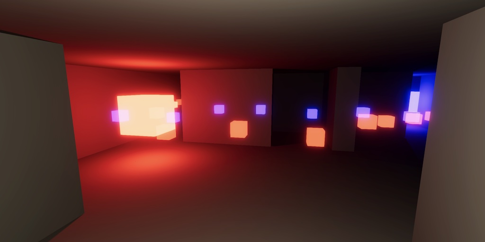
Game Scene
The game that we'll clone in this tutorial is 3D Monster Maze, or any other similar maze game. It supersedes of the old Maze tutorial, so we'll name it Maze 2.
Visuals
Once again we'll use the same graphics settings as Paddle Square, so we can copy that project and remove all scripts and the components that use them. Also remove everything except the main camera from the game scene. We'll only reuse the Particles material and a text object.
Because we're creating a closed maze there will be no environmental lighting. So we start with no lights and set the global environmental lighting and reflection intensity to zero. To see what we're creating turn off the scene lighting in the scene window.
Maze Cells
We generate the maze at runtime by populating the scene with prefab instances for each cell in the maze grid. We'll make these instances reusable using the approach that we introduced in the Runner 2 tutorial, but this time we name the component type MazeCellObject.
using System.Collections.Generic;
using UnityEngine;
public class MazeCellObject : MonoBehaviour
{
#if UNITY_EDITOR
static List<Stack<MazeCellObject>> pools;
[RuntimeInitializeOnLoadMethod(RuntimeInitializeLoadType.BeforeSceneLoad)]
static void ClearPools ()
{
if (pools == null)
{
pools = new();
}
else
{
for (int i = 0; i < pools.Count; i++)
{
pools[i].Clear();
}
}
}
#endif
[System.NonSerialized]
System.Collections.Generic.Stack<MazeCellObject> pool;
public MazeCellObject GetInstance ()
{
if (pool == null)
{
pool = new();
#if UNITY_EDITOR
pools.Add(pool);
#endif
}
if (pool.TryPop(out MazeCellObject instance))
{
instance.gameObject.SetActive(true);
}
else
{
instance = Instantiate(this);
instance.pool = pool;
}
return instance;
}
public void Recycle ()
{
pool.Push(this);
gameObject.SetActive(false);
}
}
We'll give everything the same dull white material, with its Environment Reflections and Specular Reflections disabled. That way the walls, floor, and ceiling look like they're plastered instead of made from plastic.
Each cell will fill a 2×2×2 cube. They're empty except for the walls between cells. As usual for this series we limit our visualization to cubes, however because we always see a single side of floors, ceilings, and walls we'll use the default quad object to model them. Keep the colliders of the quads so we can use PhysX to navigate the maze later.
Let's start with a cell that has open passages on all four sides, which functions as an X junction. We assume that its neighboring cells do have walls, so this cell will have a portion of the walls at its corners. We design these as square pillars that extend 0.25 units into the cells. That makes the passages 1.5 units wide and the total wall thickness across two cells 0.5 units.
Each pillar is made with two quads. The floor and ceiling can be made with three quads each.
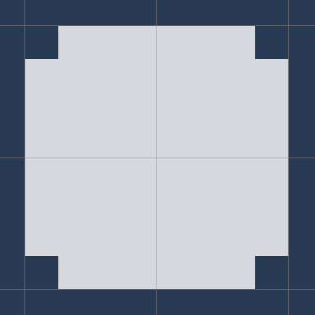
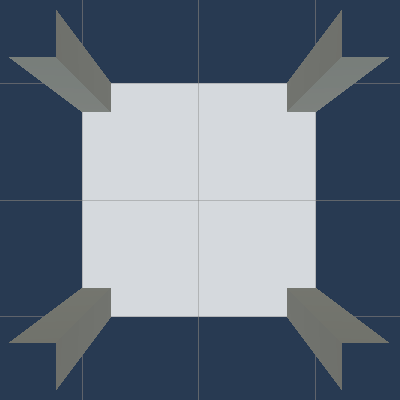
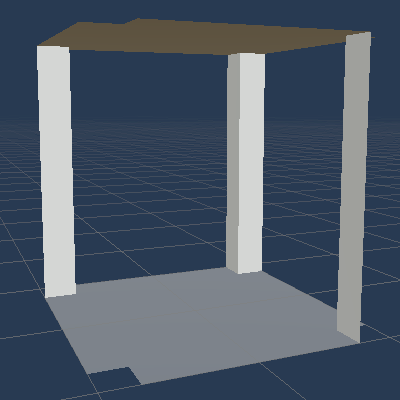
Next, create prefabs for cells with less than four open passages. As we can rotate instances we only have to create four additional prefabs. We'll always use the order north, east, south, west. First, a dead-end cell with only a single open passage, which leads north. Second, a cell with a straight north-south passage. Third, a north-east corner cell. Fourth, a T junction going north, east, and south.
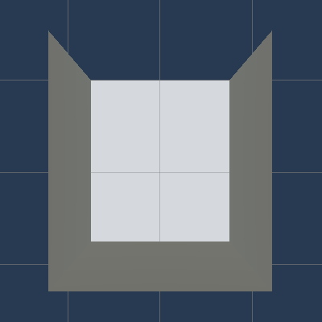
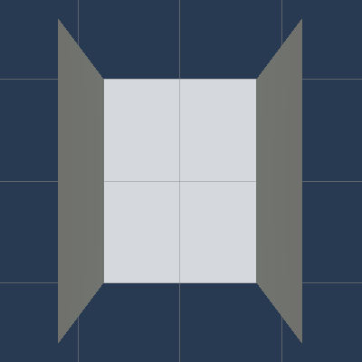
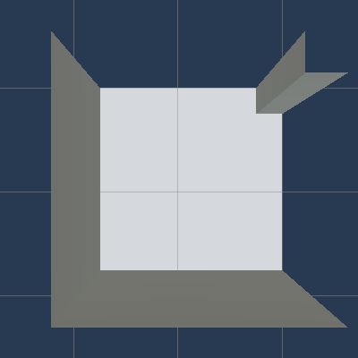
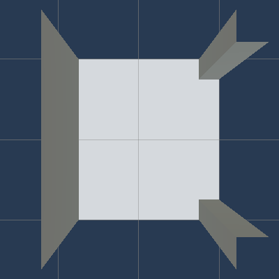
Visualizing the Maze
To show the maze we'll create a MazeVisualization scriptable object type that holds references to all maze cell prefabs. Create such a scriptable object asset and hook it up.
using UnityEngine;
[CreateAssetMenu]
public class MazeVisualization : ScriptableObject
{
[SerializeField]
MazeCellObject end, straight, corner, tJunction, xJunction;
}
To know the size of the maze and where to position cells we introduce a Maze struct type. It keep track of its size, which gets passed to it via its constructor method. Expose its total length via a getter property and include methods to convert from index to 2D coordinates, from coordinates to world position with configurable elevation, and directly from index to world position. This is based on 2×2 unit cells and with the maze centered on the origin.
using Unity.Collections;
using Unity.Mathematics;
using UnityEngine;
using static Unity.Mathematics.math;
public struct Maze
{
int2 size;
public int Length => size.x * size.y;
public Maze (int2 size)
{
this.size = size;
}
public int2 IndexToCoordinates (int index)
{
int2 coordinates;
coordinates.y = index / size.x;
coordinates.x = index - size.x * coordinates.y;
return coordinates;
}
public Vector3 CoordinatesToWorldPosition (int2 coordinates, float y = 0f) =>
new Vector3(
2f * coordinates.x + 1f - size.x,
y,
2f * coordinates.y + 1f - size.y
);
public Vector3 IndexToWorldPosition (int index, float y = 0f) =>
CoordinatesToWorldPosition(IndexToCoordinates(index), y);
}
Now we can add a Visualize method to MazeVisualization that spawns and positions cell instances based on a maze. We begin by always spawning X junctions.
public void Visualize (Maze maze)
{
for (int i = 0; i < maze.Length; i++)
{
MazeCellObject instance = xJunction.GetInstance();
instance.transform.localPosition = maze.IndexToWorldPosition(i);
}
}
We'll again introduce a single game object with a Game component that is responsible for controlling the entire game. It needs a configurable reference to a visualization and a maze size, set to 20×20 by default. When it awakens it creates and keep track of a maze and visualizes it.
using TMPro;
using Unity.Jobs;
using Unity.Mathematics;
using UnityEngine;
using static Unity.Mathematics.math;
public class Game : MonoBehaviour
{
[SerializeField]
MazeVisualization visualization;
[SerializeField]
int2 mazeSize = int2(20, 20);
Maze maze;
void Awake ()
{
maze = new Maze(mazeSize);
visualization.Visualize(maze);
}
}
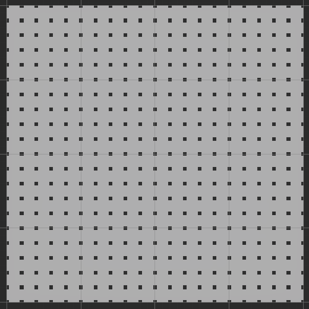
At this point the maze appears to be an open area filled with pillars.
Generating the Maze
To create an actual maze we have to close some of the passages of cells. We have to keep track of the cell state, generate a maze layout, and pick the correct visualizations.
Cell State
The only thing that we need to track per cell is whether each of its four passages is open or closed. The most compact way to do this is by using bit flags to mark open passages. So we introduce a MazeFlags enumeration type with values for each passage, along with entries for Empty and all passages. Using the NESW order, the least significant bit represents north, the second one east, and so on.
[System.Flags]
public enum MazeFlags
{
Empty = 0,
PassageN = 0b0001,
PassageE = 0b0010,
PassageS = 0b0100,
PassageW = 0b1000,
PassageAll = 0b1111
}
Let's provide some convenient extension methods to make checking and changing the maze flags easier, like we did in the Minecomb tutorial. Add methods to check whether the flags data has a given bit mask set, whether it has any of a mask set, and whether a mask is not set. Also include a check whether exactly one flag is set, regardless which. Finish with a method that returns the flags either with or without a bit mask set.
public static class MazeFlagsExtensions
{
public static bool Has (this MazeFlags flags, MazeFlags mask) =>
(flags & mask) == mask;
public static bool HasAny (this MazeFlags flags, MazeFlags mask) =>
(flags & mask) != 0;
public static bool HasNot (this MazeFlags flags, MazeFlags mask) =>
(flags & mask) != mask;
public static bool HasExactlyOne (this MazeFlags flags) =>
flags != 0 && (flags & (flags - 1)) == 0;
public static MazeFlags With (this MazeFlags flags, MazeFlags mask) =>
flags | mask;
public static MazeFlags Without (this MazeFlags flags, MazeFlags mask) =>
flags & ~mask;
}
We'll keep track of the cell states via a native array that we put in Maze. Create it in the constructor method and add a public method to dispose it, if it is created. Also disable the access restrictions for parallel jobs so such jobs could check cell neighbors.
[NativeDisableParallelForRestriction]
NativeArray<MazeFlags> cells;
public int Length => cells.Length;
public Maze (int2 size)
{
this.size = size;
cells = new NativeArray<MazeFlags>(size.x * size.y, Allocator.Persistent);
}
public void Dispose ()
{
if (cells.IsCreated)
{
cells.Dispose();
}
}
Rather than exposing the native array let's add an index property that forwards to it.
public MazeFlags this[int index]
{
get => cells[index];
set => cells[index] = value;
}
Let's also give it convenient methods to directly set or unset a mask for a given cell index, without having to retrieve the cell state, because we don't always care about it.
public MazeFlags Set (int index, MazeFlags mask) => cells[index] = cells[index].With(mask); public MazeFlags Unset (int index, MazeFlags mask) => cells[index] = cells[index].Without(mask);
Finally, include getter properties for the east-west and north-south size of the maze and the index offset steps in all four directions.
public int SizeEW => size.x; public int SizeNS => size.y; public int StepN => size.x; public int StepE => 1; public int StepS => -size.x; public int StepW => -1;
Game must now dispose the maze when it gets destroyed, which happens when we exit play mode in the editor.
void OnDestroy ()
{
maze.Dispose();
}
Picking the Correct Visualization
To have MazeVisualization instantiate the correct prefab for a cell we give it a GetPrefab method that returns a prefab given the MazeFlags of a cell. Let's start by only picking the correct prefab and ignoring rotation. This can be done with a single switch expression. No cell should be empty, so we'll use the X junction for that case as well.
MazeCellObject GetPrefab (MazeFlags flags) => flags switch
{
MazeFlags.PassageN => deadEnd,
MazeFlags.PassageE => deadEnd,
MazeFlags.PassageS => deadEnd,
MazeFlags.PassageW => deadEnd,
MazeFlags.PassageN | MazeFlags.PassageS => straight,
MazeFlags.PassageE | MazeFlags.PassageW => straight,
MazeFlags.PassageN | MazeFlags.PassageE => corner,
MazeFlags.PassageE | MazeFlags.PassageS => corner,
MazeFlags.PassageS | MazeFlags.PassageW => corner,
MazeFlags.PassageW | MazeFlags.PassageN => corner,
MazeFlags.PassageAll & ~MazeFlags.PassageW => tJunction,
MazeFlags.PassageAll & ~MazeFlags.PassageN => tJunction,
MazeFlags.PassageAll & ~MazeFlags.PassageE => tJunction,
MazeFlags.PassageAll & ~MazeFlags.PassageS => tJunction,
_ => xJunction
};
To check whether this works let's loop through the 16 options.
MazeCellObject instance = GetPrefab((MazeFlags)(i % 16)).GetInstance();
To also support rotation, add a static array with quaternions for the four needed rotations.
static Quaternion[] rotations =
{
Quaternion.identity,
Quaternion.Euler(0f, 90f, 0f),
Quaternion.Euler(0f, 180f, 0f),
Quaternion.Euler(0f, 270f, 0f)
};
Then have GetPrefab return both the prefab and the rotation and use that to correctly rotate the instance. Let's use a tuple struct to return them together.
public void Visualize (Maze maze)
{
for (int i = 0; i < maze.Length; i++)
{
(MazeCellObject, int) prefabWithRotation = GetPrefab((MazeFlags)(i % 16));
MazeCellObject instance = prefabWithRotation.Item1.GetInstance();
//instance.transform.localPosition = maze.IndexToWorldPosition(i);
instance.transform.SetPositionAndRotation(
maze.IndexToWorldPosition(i), rotations[prefabWithRotation.Item2]
);
}
}
(MazeCellObject, int) GetPrefab (MazeFlags flags) => flags switch
{
MazeFlags.PassageN => (deadEnd, 0),
MazeFlags.PassageE => (deadEnd, 1),
MazeFlags.PassageS => (deadEnd, 2),
MazeFlags.PassageW => (deadEnd, 3),
MazeFlags.PassageN | MazeFlags.PassageS => (straight, 0),
MazeFlags.PassageE | MazeFlags.PassageW => (straight, 1),
MazeFlags.PassageN | MazeFlags.PassageE => (corner, 0),
MazeFlags.PassageE | MazeFlags.PassageS => (corner, 1),
MazeFlags.PassageS | MazeFlags.PassageW => (corner, 2),
MazeFlags.PassageW | MazeFlags.PassageN => (corner, 3),
MazeFlags.PassageAll & ~MazeFlags.PassageW => (tJunction, 0),
MazeFlags.PassageAll & ~MazeFlags.PassageN => (tJunction, 1),
MazeFlags.PassageAll & ~MazeFlags.PassageE => (tJunction, 2),
MazeFlags.PassageAll & ~MazeFlags.PassageS => (tJunction, 3),
_ => (xJunction, 0)
};
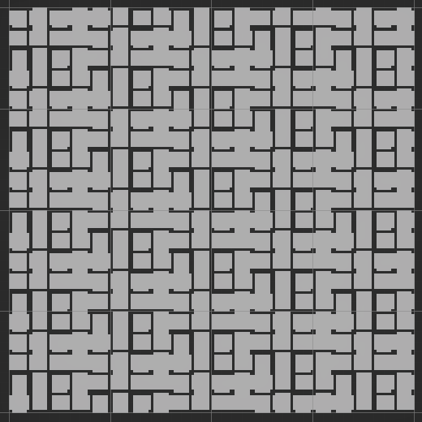
After we have confirmed that the visualization works correctly, pass the actual cell flags to GetPrefab. Currently this will again produce only X junctions because the maze is empty.
(MazeCellObject, int) prefabWithRotation = GetPrefab(maze[i]);
Growing a Maze
To build an actual maze with winding passages we'll create a GenerateMazeJob Burst job that builds the maze based on a seed value, which it uses to generate random values. Generating the maze is a sequential process of walking through it, so the job implements IJob.
using Unity.Burst;
using Unity.Collections;
using Unity.Jobs;
using Unity.Mathematics;
[BurstCompile]
public struct GenerateMazeJob : IJob
{
public Maze maze;
public int seed;
public void Execute ()
{
var random = new Random((uint)seed);
}
}
Each step of the algorithm will have to check whether the current cell has an empty neighbor so it can pick one of those at random to visit next. Create a FindAvailablePassages method for this that checks all four potential neighbors given a cell index and stores (neighbor index, passage direction, opposite passage direction) tuples in a temporary scratchpad, for which we'll pass it a native array. Finally, it returns the amount of available passages. Create the scratchpad in Execute with a length of 4.
public void Execute ()
{
var random = new Random((uint)seed);
var scratchpad = new NativeArray<(int, MazeFlags, MazeFlags)>(
4, Allocator.Temp, NativeArrayOptions.UninitializedMemory
);
}
int FindAvailablePassages (
int index, NativeArray<(int, MazeFlags, MazeFlags)> scratchpad
)
{
int2 coordinates = maze.IndexToCoordinates(index);
int count = 0;
if (coordinates.x + 1 < maze.SizeEW)
{
int i = index + maze.StepE;
if (maze[i] == MazeFlags.Empty)
{
scratchpad[count++] = (i, MazeFlags.PassageE, MazeFlags.PassageW);
}
}
if (coordinates.x > 0)
{
int i = index + maze.StepW;
if (maze[i] == MazeFlags.Empty)
{
scratchpad[count++] = (i, MazeFlags.PassageW, MazeFlags.PassageE);
}
}
if (coordinates.y + 1 < maze.SizeNS)
{
int i = index + maze.StepN;
if (maze[i] == MazeFlags.Empty)
{
scratchpad[count++] = (i, MazeFlags.PassageN, MazeFlags.PassageS);
}
}
if (coordinates.y > 0)
{
int i = index + maze.StepS;
if (maze[i] == MazeFlags.Empty)
{
scratchpad[count++] = (i, MazeFlags.PassageS, MazeFlags.PassageN);
}
}
return count;
}
We'll let Execute use the depth-first-search algorithm to run through the maze. So we need to keep track of a list of active indices, which in the worst case would contain all indices of the maze. Also keep track of the first and last active indices, both initially zero, and pick a random index for the first active one.
public void Execute ()
{
…
var activeIndices = new NativeArray<int>(
maze.Length, Allocator.Temp, NativeArrayOptions.UninitializedMemory
);
int firstActiveIndex = 0, lastActiveIndex = 0;
activeIndices[firstActiveIndex] = random.NextInt(maze.Length);
}
Then as long as the first index isn't greater than the last index, grab the last active cell and find the available passages for it. If there is at most one passage then we're finished with this cell so decrement the last active index. Then open a random passage if there is one available and make that neighbor the last active cell.
activeIndices[firstActiveIndex] = random.NextInt(maze.Length);
while (firstActiveIndex <= lastActiveIndex)
{
int index = activeIndices[lastActiveIndex];
int availablePassageCount = FindAvailablePassages(index, scratchpad);
if (availablePassageCount <= 1)
{
lastActiveIndex -= 1;
}
if (availablePassageCount > 0)
{
(int, MazeFlags, MazeFlags) passage =
scratchpad[random.NextInt(0, availablePassageCount)];
maze.Set(index, passage.Item2);
maze[passage.Item1] = passage.Item3;
activeIndices[++lastActiveIndex] = passage.Item1;
}
}
Give Game a configuration option for a seed and generate a maze when it awakens. If the seed is set to zero we'll use a random one. This tutorial will always use seed 123.
using Random = UnityEngine.Random;
public class Game : MonoBehaviour
{
…
[SerializeField, Tooltip("Use zero for random seed.")]
int seed;
Maze maze;
void Awake ()
{
maze = new Maze(mazeSize);
new GenerateMazeJob
{
maze = maze,
seed = seed != 0 ? seed : Random.Range€(1, int.MaxValue)
}.Schedule().Complete();
visualization.Visualize(maze);
}
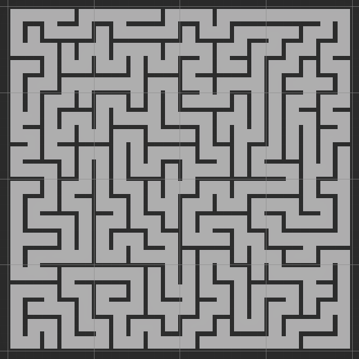
Growing Tree Algorithm
The maze that we generated is the result of using a depth-first search, which always picks the last cell that was activated. We could change this to instead always pick the first one and increase the first active index when that cell is finished instead.
int index = activeIndices[firstActiveIndex];
int availablePassageCount = FindAvailablePassages(index, scratchpad);
if (availablePassageCount <= 1)
{
firstActiveIndex += 1;
}
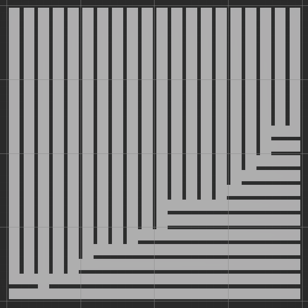
Picking the first doesn't produce anything useful. Let's instead pick a random active cell. If that cell deactivates we replace its active index with the first one.
int randomActiveIndex = random.NextInt(firstActiveIndex, lastActiveIndex + 1);
int index = activeIndices[randomActiveIndex];
int availablePassageCount = FindAvailablePassages(index, scratchpad);
if (availablePassageCount <= 1)
{
//firstActiveIndex += 1;
activeIndices[randomActiveIndex] = activeIndices[firstActiveIndex++];
}
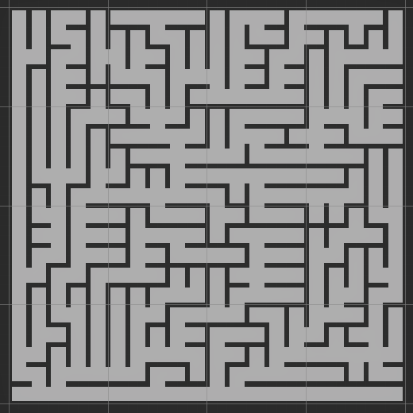
The random approach produces a result that is somewhere in between always pick first and always picking last. If we make configurable which cell gets picked with what probability we'll have implemented the growing tree algorithm. Let's do this by adding a probability for picking the last active cell, then use that to either pick the last one or a random one.
public float pickLastProbability;
public void Execute ()
{
…
while (firstActiveIndex <= lastActiveIndex)
{
bool pickLast = random.NextFloat() < pickLastProbability;
int randomActiveIndex, index;
if (pickLast)
{
randomActiveIndex = 0;
index = activeIndices[lastActiveIndex];
}
else
{
randomActiveIndex = random.NextInt(firstActiveIndex, lastActiveIndex + 1);
index = activeIndices[randomActiveIndex];
}
int availablePassageCount = FindAvailablePassages(index, scratchpad);
if (availablePassageCount <= 1)
{
if (pickLast)
{
lastActiveIndex -= 1;
}
else
{
activeIndices[randomActiveIndex] = activeIndices[firstActiveIndex++];
}
}
…
}
}
Add a configuration option for this to Game, set to 0.5 by default.
[SerializeField, Range(0f, 1f)]
float pickLastProbability = 0.5f;
Maze maze;
void Awake ()
{
maze = new Maze(mazeSize);
new GenerateMazeJob
{
maze = maze,
seed = seed != 0 ? seed : Random.Range€(1, int.MaxValue),
pickLastProbability = pickLastProbability
}.Schedule().Complete();
visualization.Visualize(maze);
}
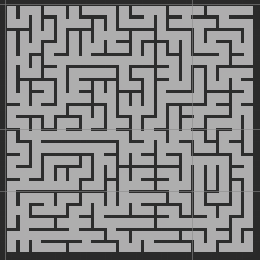
Opening Dead Ends
The growing tree algorithm creates mazes with a lot of dead ends and without any loops. We could change that by breaking open all dead ends after the growing tree algorithm is finished.
Create a variation of FindAvailablePassages named FindClosedPassages that finds all passages that are currently closed and could be opened, excluding one indicated passage.
int FindClosedPassages (
int index, NativeArray<(int, MazeFlags, MazeFlags)> scratchpad, MazeFlags exclude
)
{
int2 coordinates = maze.IndexToCoordinates(index);
int count = 0;
if (exclude != MazeFlags.PassageE && coordinates.x + 1 < maze.SizeEW)
{
scratchpad[count++] = (maze.StepE, MazeFlags.PassageE, MazeFlags.PassageW);
}
if (exclude != MazeFlags.PassageW && coordinates.x > 0)
{
scratchpad[count++] = (maze.StepW, MazeFlags.PassageW, MazeFlags.PassageE);
}
if (exclude != MazeFlags.PassageN && coordinates.y + 1 < maze.SizeNS)
{
scratchpad[count++] = (maze.StepN, MazeFlags.PassageN, MazeFlags.PassageS);
}
if (exclude != MazeFlags.PassageS && coordinates.y > 0)
{
scratchpad[count++] = (maze.StepS, MazeFlags.PassageS, MazeFlags.PassageN);
}
return count;
}
Then add an OpenDeadEnds method that looks for cells that have only one open passage, and if so open a random passage for it, with a configurable probability. Do this after generating the maze, if the probability is greater than zero. Have it return the random state that it needs, so code that will come after invoking it can correctly continue with the random state.
public float pickLastProbability, openDeadEndProbability;
public void Execute ()
{
…
if (openDeadEndProbability > 0f)
{
random = OpenDeadEnds(random, scratchpad);
}
}
Random OpenDeadEnds (
Random random, NativeArray<(int, MazeFlags, MazeFlags)> scratchpad
)
{
for (int i = 0; i < maze.Length; i++)
{
MazeFlags cell = maze[i];
if (cell.HasExactlyOne() && random.NextFloat() < openDeadEndProbability)
{
int availablePassageCount = FindClosedPassages(i, scratchpad, cell);
(int, MazeFlags, MazeFlags) passage =
scratchpad[random.NextInt(0, availablePassageCount)];
maze[i] = cell.With(passage.Item2);
maze.Set(i + passage.Item1, passage.Item3);
}
}
return random;
}
Give Game a configuration option for this as well, which I won't show here.
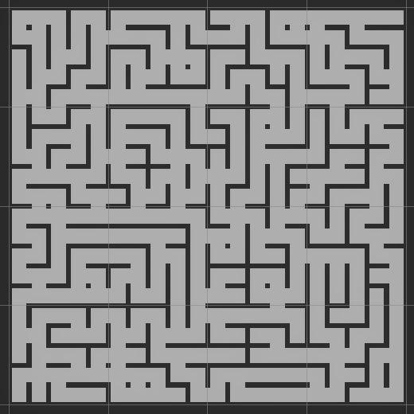
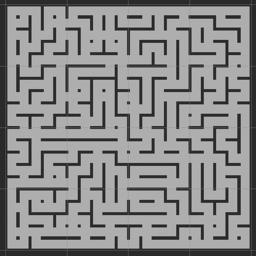
The resulting mazes have fewer dead ends and contain loops. These loops can be so short that they form little open areas in the maze, with some walls reduced to pillars.
Opening Arbitrary Passages
We can also open arbitrary passages, to create even more loops and larger open areas, again with a configurable probability provided via Game. Give GenerateMazeJob an OpenArbitraryPassages method that loops through all cells and opens the west and south passages at random if possible. We don't need to check whether they're already open because it is entirely random.
public float pickLastProbability, openDeadEndProbability, openArbitraryProbability;
public void Execute ()
{
…
if (openArbitraryProbability > 0f)
{
random = OpenArbitraryPasssages(random);
}
}
…
Random OpenArbitraryPasssages (Random random)
{
for (int i = 0; i < maze.Length; i++)
{
int2 coordinates = maze.IndexToCoordinates(i);
if (coordinates.x > 0 && random.NextFloat() < openArbitraryProbability)
{
maze.Set(i, MazeFlags.PassageW);
maze.Set(i + maze.StepW, MazeFlags.PassageE);
}
if (coordinates.y > 0 && random.NextFloat() < openArbitraryProbability)
{
maze.Set(i, MazeFlags.PassageS);
maze.Set(i + maze.StepS, MazeFlags.PassageN);
}
}
return random;
}
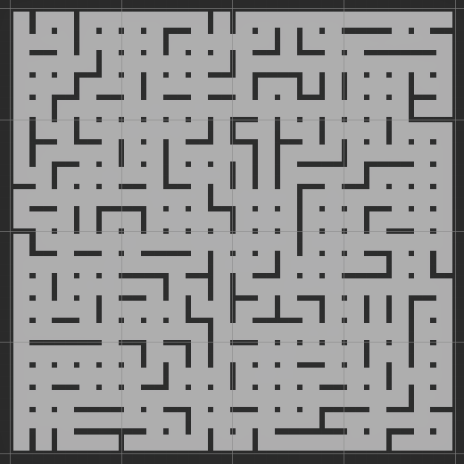
From now on I'll set the pick-last probability to 0.5, open dead ends to 0.5, and open arbitrary to 0.25.
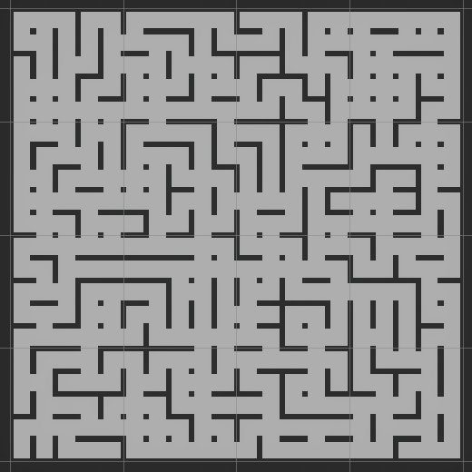
Diagonal Passages
Although the maze only contains the straight north, east, south, and west passages, when there is an open area it might be possible to move diagonally as well. So let's add entries for NE, SE, SW, and NW to MazeFlags so we can store this information, using the next four available bits. Rename PassageAll to PassagesStraight and also add a PassagesDiagonal bit mask.
PassageN = 0b0001, PassageE = 0b0010, PassageS = 0b0100, PassageW = 0b1000, PassagesStraight = 0b1111, PassageNE = 0b0001_0000, PassageSE = 0b0010_0000, PassageSW = 0b0100_0000, PassageNW = 0b1000_0000, PassagesDiagonal = 0b1111_0000
Create a FindDiagonalPassagesJob parallel Burst job that checks the diagonal passages for a cell. There is a northeast passage if the cell's north and east passages are both open, and the south and east passages of its northeast neighbor are also open. Likewise for the other diagonal passages.
using Unity.Burst;
using Unity.Collections;
using Unity.Jobs;
[BurstCompile]
public struct FindDiagonalPassagesJob : IJobFor
{
public Maze maze;
public void Execute (int i)
{
MazeFlags cell = maze[i];
if (
cell.Has(MazeFlags.PassageN | MazeFlags.PassageE) &&
maze[i + maze.StepN + maze.StepE].Has(MazeFlags.PassageS | MazeFlags.PassageW)
)
{
cell = cell.With(MazeFlags.PassageNE);
}
if (
cell.Has(MazeFlags.PassageN | MazeFlags.PassageW) &&
maze[i + maze.StepN + maze.StepW].Has(MazeFlags.PassageS | MazeFlags.PassageE)
)
{
cell = cell.With(MazeFlags.PassageNW);
}
if (
cell.Has(MazeFlags.PassageS | MazeFlags.PassageE) &&
maze[i + maze.StepS + maze.StepE].Has(MazeFlags.PassageN | MazeFlags.PassageW)
)
{
cell = cell.With(MazeFlags.PassageSE);
}
if (
cell.Has(MazeFlags.PassageS | MazeFlags.PassageW) &&
maze[i + maze.StepS + maze.StepW].Has(MazeFlags.PassageN | MazeFlags.PassageE)
)
{
cell = cell.With(MazeFlags.PassageSW);
}
maze[i] = cell;
}
}
Schedule this job in Game after generating the maze. Let's use the east-west side of the maze for the inner loop batch count.
new FindDiagonalPassagesJob
{
maze = maze
}.ScheduleParallel(
maze.Length, maze.SizeEW, new GenerateMazeJob
{
maze = maze,
seed = seed != 0 ? seed : Random.Range€(1, int.MaxValue),
pickLastProbability = pickLastProbability,
openDeadEndProbability = openDeadEndProbability,
openArbitraryProbability = openArbitraryProbability
}.Schedule()
).Complete();
This will break the visualization, because the diagonal bits will interfere with its comparisons. Add extension methods to MazeFlags to extract only the straight or the diagonal passage flags.
public static MazeFlags StraightPassages (this MazeFlags flags) => flags & MazeFlags.PassagesStraight; public static MazeFlags DiagonalPassages (this MazeFlags flags) => flags & MazeFlags.PassagesDiagonal;
Then only check the straight passages in MazeVisualization.GetPrefab.
(MazeCellObject, int) GetPrefab (MazeFlags flags) => flags.StraightPassages() switch
{
…
};
Removing Pillars
Now that we are aware of diagonal passages we can use them to remove the pillars, emptying the open areas of the maze. The cell prefabs that we current have are for when all diagonal passages are closed, so let's rename the configuration fields to make that clear.
MazeCellObject deadEnd, straight, cornerClosed, tJunctionClosed, xJunctionClosed;
We begin with the simplest case, which is the open corner. It is the same as the closed corner but with its pillar removed and the floor and ceiling extended to the now open corner.
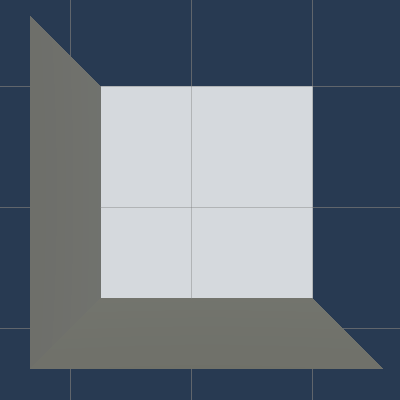
Add a configuration field for the open corner and pick the correct prefab in GetPrefab by forwarding to a new GetCorner method. This method only has to check whether there is any diagonal passage, because there can be at most one in a corner.
MazeCellObject
deadEnd, straight,
cornerClosed, cornerOpen,
tJunctionClosed, xJunctionClosed;
…
(MazeCellObject, int) GetPrefab (MazeFlags flags) => flags.StraightPassages() switch
{
…
MazeFlags.PassageN | MazeFlags.PassageE => GetCorner(flags, 0),
MazeFlags.PassageE | MazeFlags.PassageS => GetCorner(flags, 1),
MazeFlags.PassageS | MazeFlags.PassageW => GetCorner(flags, 2),
MazeFlags.PassageW | MazeFlags.PassageN => GetCorner(flags, 3),
…
};
(MazeCellObject, int) GetCorner (MazeFlags flags, int rotation) => (
flags.HasAny(MazeFlags.PassagesDiagonal) ? cornerOpen : cornerClosed, rotation
);
There are three new prefabs needed for T junctions: with NE open, with SE open, and with both open.
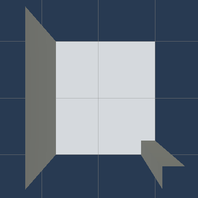
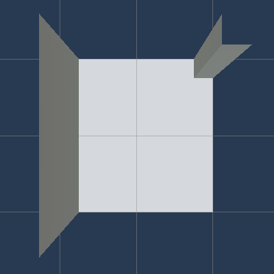
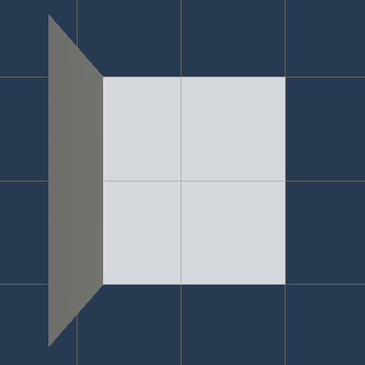
There can be a lot of T-junction permutations, but we can simplify this by rotating the diagonal passage bits. Add a RotatedDiagonalPassages method to MazeFlags for this, which extracts and rotates the four diagonal flag bits rightward by at most four.
public static MazeFlags RotatedDiagonalPassages (this MazeFlags flags, int rotation)
{
int bits = (int)(flags & MazeFlags.PassagesDiagonal);
bits = (bits >> rotation) | (bits << (4 - rotation));
return (MazeFlags)bits & MazeFlags.PassagesDiagonal;
}
Now we can add a GetTJunction method to MazeVisualization that only has to check the four unique permutations.
[SerializeField]
MazeCellObject
…
tJunctionClosed, tJunctionOpenNE, tJunctionOpenSE, tJunctionOpen,
xJunctionClosed;
…
(MazeCellObject, int) GetPrefab (MazeFlags flags) => flags.StraightPassages() switch
{
…
MazeFlags.PassagesStraight & ~MazeFlags.PassageW => GetTJunction(flags, 0),
MazeFlags.PassagesStraight & ~MazeFlags.PassageN => GetTJunction(flags, 1),
MazeFlags.PassagesStraight & ~MazeFlags.PassageE => GetTJunction(flags, 2),
MazeFlags.PassagesStraight & ~MazeFlags.PassageS => GetTJunction(flags, 3),
…
};
(MazeCellObject, int) GetTJunction (MazeFlags flags, int rotation) => (
flags.RotatedDiagonalPassages(rotation) switch
{
MazeFlags.Empty => tJunctionClosed,
MazeFlags.PassageNE => tJunctionOpenNE,
MazeFlags.PassageSE => tJunctionOpenSE,
_ => tJunctionOpen
},
rotation
);
Finally, the X junction has a total of six permutations: fully closed, only NE open, NE & SE open, NE & SW open, only NE closed, and fully open.
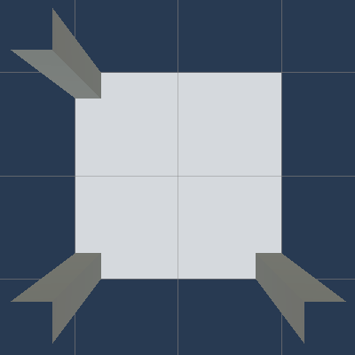
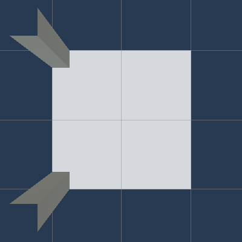
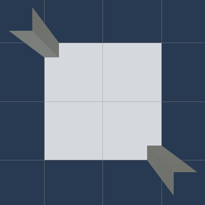
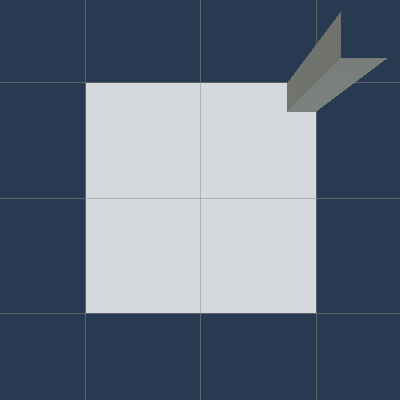
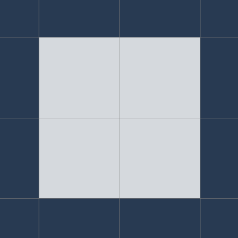
Introduce a GetXJuction method for this, which checks all diagonal cases like GetPrefab checks the straight cases.
MazeCellObject
…
xJunctionClosed, xJunctionOpenNE, xJunctionOpenNE_SE, xJunctionOpenNE_SW,
xJunctionClosedNE, xJunctionOpen;
(MazeCellObject, int) GetPrefab (MazeFlags flags) => flags.StraightPassages() switch
{
…
_ => GetXJunction(flags)
};
(MazeCellObject, int) GetXJunction (MazeFlags flags) =>
flags.DiagonalPassages() switch
{
MazeFlags.Empty => (xJunctionClosed, 0),
MazeFlags.PassageNE => (xJunctionOpenNE, 0),
MazeFlags.PassageSE => (xJunctionOpenNE, 1),
MazeFlags.PassageSW => (xJunctionOpenNE, 2),
MazeFlags.PassageNW => (xJunctionOpenNE, 3),
MazeFlags.PassageNE | MazeFlags.PassageSE => (xJunctionOpenNE_SE, 0),
MazeFlags.PassageSE | MazeFlags.PassageSW => (xJunctionOpenNE_SE, 1),
MazeFlags.PassageSW | MazeFlags.PassageNW => (xJunctionOpenNE_SE, 2),
MazeFlags.PassageNW | MazeFlags.PassageNE => (xJunctionOpenNE_SE, 3),
MazeFlags.PassageNE | MazeFlags.PassageSW => (xJunctionOpenNE_SW, 0),
MazeFlags.PassageSE | MazeFlags.PassageNW => (xJunctionOpenNE_SW, 1),
MazeFlags.PassagesDiagonal & ~MazeFlags.PassageNE => (xJunctionClosedNE, 0),
MazeFlags.PassagesDiagonal & ~MazeFlags.PassageSE => (xJunctionClosedNE, 1),
MazeFlags.PassagesDiagonal & ~MazeFlags.PassageSW => (xJunctionClosedNE, 2),
MazeFlags.PassagesDiagonal & ~MazeFlags.PassageNW => (xJunctionClosedNE, 3),
_ => (xJunctionOpen, 0),
};
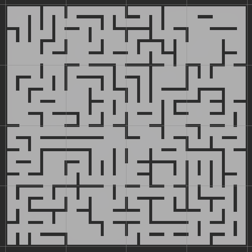
Gameplay
With the maze completed we move on to implementing gameplay.
Player
We start with the player, for which we'll use a game object with a CharacterController component. Set its Skin Width to 0.04, its Min Move Distance to zero, its Center Y to 0.8, its Radius to 0.3, and its Height to 1.6.
Make the main camera a child of the player object with its Y position set to 1.5, clear its rotation, and reduce its near clipping plane to 0.15.
We make the player a light source itself so we can see something. Create a point light with a slightly yellow color and make it a child of the camera. This light doesn't need to cast shadows because it matches the view position, thus anything shadowed would not be visible.
Position the player a (1, 0, 1) so it stands in the middle of cell (10, 10) facing north.
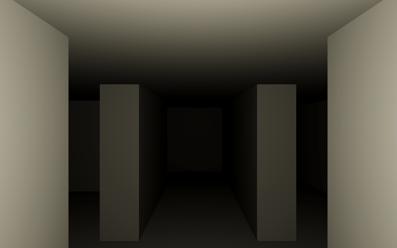
Give the player object a Player component with configurable movement speed, rotation speed, and mouse sensitivity, set to 4, 180, and 5 by default. Also give it a configurable starting vertical eye angle set to 10 by default so it look a bit down.
using UnityEngine;
public class Player : MonoBehaviour
{
[SerializeField, Min(0f)]
float movementSpeed = 4f, rotationSpeed = 180f, mouseSensitivity = 5f;
[SerializeField]
float startingVerticalEyeAngle = 10f;
}
When the player awakens, have it store a reference to its character controller and also the Transform of its eye, which is the camera, its only child. Also keep track of the horizontal and vertical eye angles.
CharacterController characterController;
Transform eye;
Vector2 eyeAngles;
void Awake ()
{
characterController = GetComponent<CharacterController>();
eye = transform.GetChild(0);
}
Introduce a public StartNewGame method with a position parameter. Have it pick a random horizontal eye angle and use the configured starting vertical eye angle. Then set the player's position, temporarily disabling the character controller to make teleportation possible. Also add a public Move method that moves the player and returns its final position, but leave actual movement for later.
public void StartNewGame (Vector3 position)
{
eyeAngles.x = Random.Range€(0f, 360f);
eyeAngles.y = startingVerticalEyeAngle;
characterController.enabled = false;
transform.localPosition = position;
characterController.enabled = true;
}
public Vector3 Move ()
{
return transform.localPosition;
}
Add a configuration field for the player to Game. Have it start a new game for the player when it awakens, placing it at position (1, 0, 1). Initialize the random state to the give seed if it isn't zero, so we always get the same view if a seed is configured. Then add an Update method that tells the player to move.
[SerializeField]
Player player;
…
void Awake ()
{
…
if (seed != 0)
{
Random.InitState(seed);
}
player.StartNewGame(new Vector3(1f, 0f, 1f));
}
void Update()
{
player.Move();
}
Let's begin by controlling the player's view. As usual we use the default input so go to the Input Manager project settings. Duplicate the first Horizontal axis, rename it to Horizontal View, and set its negative and positive buttons to something like q and e for primary and j and l for secondary keys. Also duplicate the first Vertical axis and use something like the k and i keys. You can also add support for gamepads.
Add an UpdateEyeAngles method to Player and invoke it at the start of Move. In it, adjust the angles based on the rotation speed and time delta, using the view axes. Also, if the mouse sensitivity is positive, incorporate the mouse axes scaled by the sensitivity. Then wrap the horizontal angle so it stays in the 0–360 range and clamp the vertical angle so it stays in the −45–45 range. Use the final angles to set the eye's XY rotation.
public Vector3 Move ()
{
UpdateEyeAngles();
return transform.localPosition;
}
void UpdateEyeAngles ()
{
float rotationDelta = rotationSpeed * Time.deltaTime;
eyeAngles.x += rotationDelta * Input.GetAxis("Horizontal View");
eyeAngles.y -= rotationDelta * Input.GetAxis("Vertical View");
if (mouseSensitivity > 0f)
{
float mouseDelta = rotationDelta * mouseSensitivity;
eyeAngles.x += mouseDelta * Input.GetAxis("Mouse X");
eyeAngles.y -= mouseDelta * Input.GetAxis("Mouse Y");
}
if (eyeAngles.x > 360f)
{
eyeAngles.x -= 360f;
}
else if (eyeAngles.x < 0f)
{
eyeAngles.x += 360f;
}
eyeAngles.y = Mathf.Clamp(eyeAngles.y, -45f, 45f);
eye.localRotation = Quaternion.Euler(eyeAngles.y, eyeAngles.x, 0f);
}
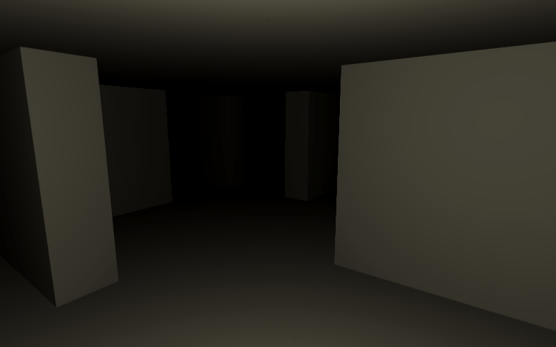
To also move the player add an UpdatePosition method that gets invoked after UpdateEyeAngles. The movement is in the XZ plane and based on the Horizontal and Vertical input axes. Normalize the movement vector if it is greater than 1, then factor in the movement speed. The direction of movement is based solely on the horizontal eye angle, so use it to construct 2D forward and right vectors and use those to build the final movement vector. Then invoke SimpleMove on the character controller with an Y component of zero.
public Vector3 Move ()
{
UpdateEyeAngles();
UpdatePosition();
return transform.localPosition;
}
void UpdatePosition ()
{
var movement = new Vector2(
Input.GetAxis("Horizontal"), Input.GetAxis("Vertical")
);
float sqrMagnitude = movement.sqrMagnitude;
if (sqrMagnitude > 1f)
{
movement /= Mathf.Sqrt(sqrMagnitude);
}
movement *= movementSpeed;
var forward = new Vector2(
Mathf.Sin(eyeAngles.x * Mathf.Deg2Rad),
Mathf.Cos(eyeAngles.x * Mathf.Deg2Rad)
);
var right = new Vector2(forward.y, -forward.x);
movement = right * movement.x + forward * movement.y;
characterController.SimpleMove(new Vector3(movement.x, 0f, movement.y));
}
The player can now move through the maze.
Scent
The maze will be populated with other entities that try to catch the player. We'll use the most generic term for these AI-controlled entities, which is agent. To do that they will have to determine where to go. The standard way to implement this would be by using A* pathfinding, but let's do something else instead.
The idea is that our agents will navigate by smell. To seek the player they simply move in the direction of the strongest scent. So instead of finding paths we will disperse the scent of the player. We can do this with cellular automata, one per cell. The advantage of cellular automata is that they are simple, can be processed in parallel at constant time when using double-buffering, and the same data can be used by multiple agents. A disadvantage is that every cell needs to be processed all the time.
Create a parallel DisperseScentJob Burst job with fields for the maze and two float arrays for the old and new scent.
using Unity.Burst;
using Unity.Collections;
using Unity.Jobs;
[BurstCompile(FloatPrecision.Standard, FloatMode.Fast)]
public struct DisperseScentJob : IJobFor
{
[ReadOnly]
public Maze maze;
[ReadOnly, NativeDisableParallelForRestriction]
public NativeArray<float> oldScent;
public NativeArray<float> newScent;
public void Execute (int i)
{ }
}
The Execute method retrieves the old scent of its cell. Then it checks how many straight passages are open and accumulates the scent of those neighbors. It gains 20% of the total neighbor scent and loses 20% of its own scent per neighbor. Its new scent becomes that decayed by 50%.
public void Execute (int i)
{
MazeFlags cell = maze[i];
float scent = oldScent[i];
float fromNeighbors = 0f;
float dispersalFactor = 0f;
if (cell.Has(MazeFlags.PassageE))
{
fromNeighbors += oldScent[i + maze.StepE];
dispersalFactor += 1f;
}
if (cell.Has(MazeFlags.PassageW))
{
fromNeighbors += oldScent[i + maze.StepW];
dispersalFactor += 1f;
}
if (cell.Has(MazeFlags.PassageN))
{
fromNeighbors += oldScent[i + maze.StepN];
dispersalFactor += 1f;
}
if (cell.Has(MazeFlags.PassageS))
{
fromNeighbors += oldScent[i + maze.StepS];
dispersalFactor += 1f;
}
scent += (fromNeighbors - scent * dispersalFactor) * 0.2f;
newScent[i] = scent * 0.5f;
}
To make this work we have to be able to convert the player's position to a cell index. So let's add conversion methods to Maze complementary to the ones that it already has.
public int CoordinatesToIndex (int2 coordinates) => coordinates.y * size.x + coordinates.x; public int2 WorldPositionToCoordinates (Vector3 position) => int2( (int)((position.x + size.x) * 0.5f), (int)((position.z + size.y) * 0.5f) ); public int WorldPositionToIndex (Vector3 position) => CoordinatesToIndex(WorldPositionToCoordinates(position));
To manage the scent create a Scent struct that keeps track of two native arrays, which one to use, and give it a Disperse method that runs DisperseScentJob given a maze and player position, then sets the scent of the player's cell to 1, and also returns the current scent. Because this process doesn't need to run each frame let's also include a cooldown that makes the job run only ten times per second. We do set the player's scent all the time.
using Unity.Collections;
using Unity.Jobs;
using UnityEngine;
public struct Scent
{
NativeArray<float> scentA, scentB;
bool useA;
float cooldown;
public Scent (Maze maze)
{
scentA = new NativeArray<float>(
maze.Length, Allocator.Persistent, NativeArrayOptions.UninitializedMemory
);
scentB = new NativeArray<float>(maze.Length, Allocator.Persistent);
useA = false;
cooldown = 0f;
}
public void Dispose ()
{
if (scentA.IsCreated)
{
scentA.Dispose();
scentB.Dispose();
}
}
public NativeArray<float> Disperse (Maze maze, Vector3 playerPosition)
{
cooldown -= Time.deltaTime;
if (cooldown <= 0f)
{
cooldown += 0.1f;
new DisperseScentJob
{
maze = maze,
oldScent = useA ? scentA : scentB,
newScent = useA ? scentB : scentA,
}.ScheduleParallel(maze.Length, maze.SizeEW, default).Complete();
useA = !useA;
}
NativeArray<float> current = useA ? scentA : scentB;
current[maze.WorldPositionToIndex(playerPosition)] = 1f;
return current;
}
}
Add the scent to Game and disperse it after the player moves.
Scent scent;
void Awake ()
{
maze = new Maze(mazeSize);
scent = new Scent(maze);
…
}
void Update()
{
scent.Disperse(maze, player.Move());
}
void OnDestroy ()
{
maze.Dispose();
scent.Dispose();
}
Agents
Now that the player leaves a scent trail that disperses throughout the maze we move on to create an Agent component type. Give it a configurable and speed, set to white and 1 by default. Besides visualizing them with a cube we'll make the agents shed light and leave a trail of particles. So when it awakens set the light color, material color, and the particle main color to the configured one. The light and particle system will be components of the agent itself.
using Unity.Collections;
using Unity.Mathematics;
using UnityEngine;
public class Agent : MonoBehaviour
{
[SerializeField]
Color color = Color.white;
[SerializeField, Min(0f)]
float speed = 1f;
void Awake ()
{
GetComponent<Light>().color = color;
GetComponent<MeshRenderer>().material.color = color;
ParticleSystem.MainModule main = GetComponent<ParticleSystem>().main;
main.startColor = color;
}
}
The agent will keep track of the maze, the index of the cell it's currently targeting, and that cell's position. Give it a public StartNewGame method that initializes these and its own position based on a given maze and coordinates. Let it keep its own Y position.
Maze maze;
int targetIndex;
Vector3 targetPosition;
…
public void StartNewGame (Maze maze, int2 coordinates)
{
this.maze = maze;
targetIndex = maze.CoordinatesToIndex(coordinates);
targetPosition = transform.localPosition =
maze.CoordinatesToWorldPosition(coordinates, transform.localPosition.y);
}
To find its way the agent will sniff adjacent cells. Give it a Sniff method that does this gives a reference to the current trail, the scent data, and an index offset to check. The trail is an (index, scent) tuple pointing to the neighbor with the strongest scent. The method checks whether the cell with the given offset has a stronger scent and if so changes the trail.
void Sniff (ref (int, float) trail, NativeArray<float> scent, int indexOffset)
{
int sniffIndex = targetIndex + indexOffset;
float detectedScent = scent[sniffIndex];
if (detectedScent > trail.Item2)
{
trail = (sniffIndex, detectedScent);
}
}
Next, add a TryFindNewTarget method with a scent data parameter that sniffs all eight neighbors if possible, sniffing diagonal passages first as those are preferred. Once it's finished and a scent was detected it updates the target index and position. It also returns whether any scent was detected.
bool TryFindNewTarget (NativeArray<float> scent)
{
MazeFlags cell = maze[targetIndex];
(int, float) trail = (0, 0f);
if (cell.Has(MazeFlags.PassageNE))
{
Sniff(ref trail, scent, maze.StepN + maze.StepE);
}
if (cell.Has(MazeFlags.PassageNW))
{
Sniff(ref trail, scent, maze.StepN + maze.StepW);
}
if (cell.Has(MazeFlags.PassageSE))
{
Sniff(ref trail, scent, maze.StepS + maze.StepE);
}
if (cell.Has(MazeFlags.PassageSW))
{
Sniff(ref trail, scent, maze.StepS + maze.StepW);
}
if (cell.Has(MazeFlags.PassageE))
{
Sniff(ref trail, scent, maze.StepE);
}
if (cell.Has(MazeFlags.PassageW))
{
Sniff(ref trail, scent, maze.StepW);
}
if (cell.Has(MazeFlags.PassageN))
{
Sniff(ref trail, scent, maze.StepN);
}
if (cell.Has(MazeFlags.PassageS))
{
Sniff(ref trail, scent, maze.StepS);
}
if (trail.Item2 > 0f)
{
targetIndex = trail.Item1;
targetPosition = maze.IndexToWorldPosition(trail.Item1, targetPosition.y);
return true;
}
return false;
}
The agent also gets a public Move method, with the current scent data as a parameter. It begins by determining the vector and distance to the current target, along with its current movement given its speed and the time delta. Then as long as the movement exceeds the distance to the target, jump to the target position and try to find a new target. If that succeeds reduce the remaining movement by the traveled distance and determine the target vector and distance again. If this fails then stop moving and return the current position. Finally, apply the remainder of the movement and set and return the position.
public Vector3 Move (NativeArray<float> scent)
{
Vector3 position = transform.localPosition;
Vector3 targetVector = targetPosition - position;
float targetDistance = targetVector.magnitude;
float movement = speed * Time.deltaTime;
while (movement > targetDistance)
{
position = targetPosition;
if (TryFindNewTarget(scent))
{
movement -= targetDistance;
targetVector = targetPosition - position;
targetDistance = targetVector.magnitude;
}
else
{
return transform.localPosition = position;
}
}
return transform.localPosition =
position + targetVector * (movement / targetDistance);
}
Add a configuration array for agents to Game. Start a new game for them all at the end of Awake, giving them random starting coordinates. And move them all in Update after the player.
[SerializeField]
Agent[] agents;
…
void Awake ()
{
…
for (int i = 0; i < agents.Length; i++)
{
var coordinates =
int2(Random.Range€(0, mazeSize.x), Random.Range€(0, mazeSize.y));
agents[i].StartNewGame(maze, coordinates);
}
}
void Update()
{
NativeArray<float> currentScent = scent.Disperse(maze, player.Move());
for (int i = 0; i < agents.Length; i++)
{
agents[i].Move(currentScent);
}
}
Create a prefab for the agent with an Agent component, a Light, a ParticleSystem, a MeshFilter, and a MeshRenderer.
The light is a point light with intensity 2, range 6, and shadows enabled. To make shadows for additional lights show up they must also be enabled for the URP asset.
The particle system has its Start Lifetime set to 30, Simulation Space set to World and Emitter Velocity Mode set to Transform. That will make agents leave a trail of particles for the player to encounter. Set the Emission / Rate over Time to zero and Emission / Rate over Distance to 1. Set Shape to a box scaled to 0.25. Give it a Color over Lifetime as a linear gradient going from opaque to fully transparent. Set Renderer to use cubes with our Particles material and set Render Alignment to World so the particles don't rotate.
Finally, use a default cube to visualize the agent and give it an unlit material with a color and intensity property, by creating a simple shader graph for that. Set the material's intensity to 10. Also disable shadow casting of the mesh renderer.
Create three agent instances and assign them to the game's array. The first agent is red, scaled down to 0.75 and with speed 2.5. The second agent is blue, with the same scale and speed 1.5. The third agent is yellow, scaled down to 0.5 and with speed 0.5. Give them all an Y position of 1 so they float above the floor.
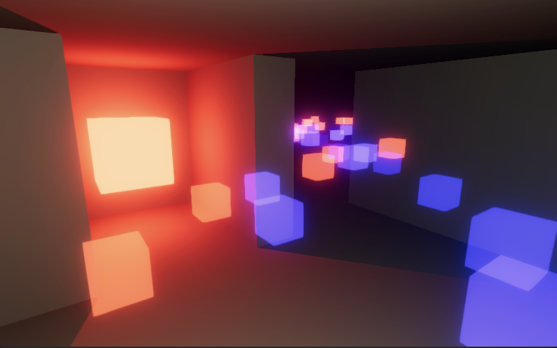 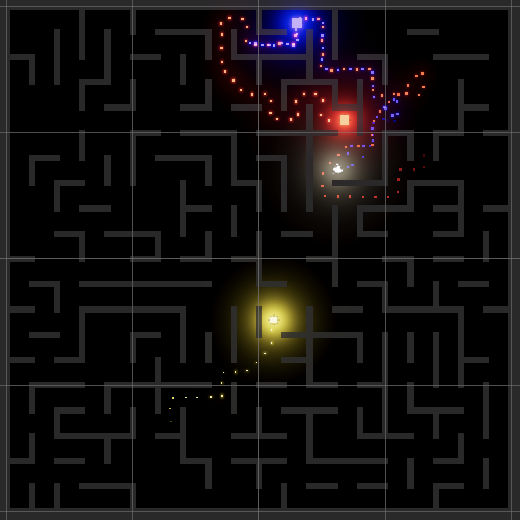
We now have three agents that chase the player. Depending on their initial distance from the player it might take a second or so before they start moving as the scent needs time to spread. Besides directly seeing the agents, the player can also find their particle trails and notice the light that they emit even before they come into view.
Ending the Game
With agents actively hunting the player we have a game-over condition: an agent catches the player. So let's have Game keep track of whether the game is playing, like we also did in the previous tutorials. Rename its Awake method to StartNewGame. Rename Update to UpdateGame and invoke it in a new Update method if the game is currently playing. Otherwise, if the space key is pressed, start a new game and immediately update it to start everything up.
bool isPlaying;//void Awake ()void StartNewGame () { isPlaying = true; … } void Update () { if (isPlaying) { UpdateGame(); } else if (Input.GetKeyDown(KeyCode.Space)) { StartNewGame(); UpdateGame(); } } void UpdateGame () { NativeArray<float> currentScent = scent.Disperse(maze, player.Move()); for (int i = 0; i < agents.Length; i++) { agents[i].Move(currentScent); } }
To initially hide the agents deactivate them in their Awake method and reactivate them in StartNewGame. Also give them a public EndGame method that deactivates them again.
void Awake ()
{
…
gameObject.SetActive(false);
}
public void StartNewGame (Maze maze, int2 coordinates)
{
…
gameObject.SetActive(true);
}
public void EndGame () => gameObject.SetActive(false);
Adjust Game.UpdateGame so it checks whether an agent is less than a unit away from the player after moving, in the XZ dimensions. If so invoke a new EndGame method and immediately return. The EndGame method disables the playing state, ends the game for all agents, and invokes OnDestroy to clear the maze and scent.
void UpdateGame ()
{
Vector3 playerPosition = player.Move();
NativeArray<float> currentScent = scent.Disperse(maze, playerPosition);
for (int i = 0; i < agents.Length; i++)
{
Vector3 agentPosition = agents[i].Move(currentScent);
if (
new Vector2(
agentPosition.x - playerPosition.x,
agentPosition.z - playerPosition.z
).sqrMagnitude < 1f
)
{
EndGame();
return;
}
}
}
void EndGame ()
{
isPlaying = false;
for (int i = 0; i < agents.Length; i++)
{
agents[i].EndGame();
}
OnDestroy();
}
At this point the game ends as soon as an agent gets close enough to the player. Pressing space after that starts a new game. If we use a fixed seed then everything will appear to work fine as we restart the game with the exact same maze and position. However, the old visualization still exists so we have to recycle it. To make this possible add a MazeCellObject array parameter to MazeVisualization.Visualize in which it stores references to all cell objects.
public void Visualize (Maze maze, MazeCellObject[] cellObjects)
{
for (int i = 0; i < maze.Length; i++)
{
(MazeCellObject, int) prefabWithRotation = GetPrefab(maze[i]);
MazeCellObject instance = cellObjects[i] =
prefabWithRotation.Item1.GetInstance();
instance.transform.SetPositionAndRotation(
maze.IndexToWorldPosition(i), rotations[prefabWithRotation.Item2]
);
}
}
Keep track of this array in Game, creating it in StartNewGame if needed and passing it to Visualize. Then in EndGame recycle all cell objects.
MazeCellObject[] cellObjects;
void StartNewGame ()
{
…
if (cellObjects == null || cellObjects.Length != maze.Length)
{
cellObjects = new MazeCellObject[maze.Length];
}
visualization.Visualize(maze, cellObjects);
…
}
…
void EndGame ()
{
…
for (int i = 0; i < cellObjects.Length; i++)
{
cellObjects[i].Recycle();
}
OnDestroy();
}
If we're using a fixed seed then the recycling will be perfect and no new cell instances will be created for successive games. If random mazes are generated then most cells will get recycled, some new ones will have to be created, and some will remain in reserve.
Reaching the Goal
Besides a game-over state we should also have a win state. We can do this by placing a goal somewhere in the maze. The challenge is to find a good location. Let's introduce a twist here and make the goal position itself, by making it move instead of remaining stationary. We can use an agent for this, by making it move away from instead of toward the player.
Add a configuration toggle to Agent to indicate whether it is a goal. If so, set the initial trail scent to the maximum in TryFindNewTarget and update the trail in Sniff only when the detected scent is weaker than the current one. This will make the goal move away from the player. It might get stuck in a corner or dead end at some point, moving back and forth between two cells, but that is fine.
[SerializeField]
bool isGoal;
…
bool TryFindNewTarget (NativeArray<float> scent)
{
MazeFlags cell = maze[targetIndex];
(int, float) trail = (0, isGoal ? float.MaxValue : 0f);
…
}
void Sniff (ref (int, float) trail, NativeArray<float> scent, int indexOffset)
{
int sniffIndex = targetIndex + indexOffset;
float detectedScent = scent[sniffIndex];
if (isGoal ? detectedScent < trail.Item2 : detectedScent > trail.Item2)
{
trail = (sniffIndex, detectedScent);
}
}
Let's also indicate the difference between a win and a loss by adding a configurable trigger message to Agent, with a public getter property.
[SerializeField] string triggerMessage; … public string TriggerMessage => triggerMessage;
Have Game display this message when a game ends, via a TextMeshPro game object, the same that we used in all tutorial of this series. Deactivate it when a new game starts and activate it with the message when the game ends.
[SerializeField]
TextMeshPro displayText;
…
void StartNewGame ()
{
isPlaying = true;
displayText.gameObject.SetActive(false);
…
}
void UpdateGame ()
{
…
EndGame(agents[i].TriggerMessage);
return;
…
}
void EndGame (string message)
{
isPlaying = false;
displayText.text = message;
displayText.gameObject.SetActive(true);
…
}
Make the text game object a child of the camera, with a Z position of 5 and a font size of 8. Set its initial text to PRESS SPACE.
The red and blue agents are chasers. Set their trigger message to RED CAUGHT YOU and BLUE CAUGHT YOU, indicating a loss. Make the yellow agent a goal and set its trigger message to YOU CAUGHT YELLOW, indicating a win.
Starting Positions
We wrap up this tutorial by improving the starting positions of the agents and the player. The player currently always starts in the same cell and the agents could start very close to it or even in the same cell. We'll instead spawn the player somewhere in the bottom left quadrant of the maze and ensure that the agents spawn outside the bottom left quadrant of the maze. We can guaranteed that by offsetting the agent coordinates by half the maze size in one dimension if they end up in the bottom left quadrant.
player.StartNewGame(maze.CoordinatesToWorldPosition(
int2(Random.Range€(0, mazeSize.x / 4), Random.Range€(0, mazeSize.y / 4))
));
int2 halfSize = mazeSize / 2;
for (int i = 0; i < agents.Length; i++)
{
var coordinates =
int2(Random.€Range(0, mazeSize.x), Random.Range€(0, mazeSize.y));
if (coordinates.x < halfSize.x && coordinates.y < halfSize.y)
{
if (Random.value < 0.5f)
{
coordinates.x += halfSize.x;
}
else
{
coordinates.y += halfSize.y;
}
}
agents[i].StartNewGame(maze, coordinates);
}
We now have a functional minimal maze game. This tutorial has been promoted to a project, the next version is 2.1.0 Occlusion Culling.
The next tutorial prototype in the is Serpensquares.